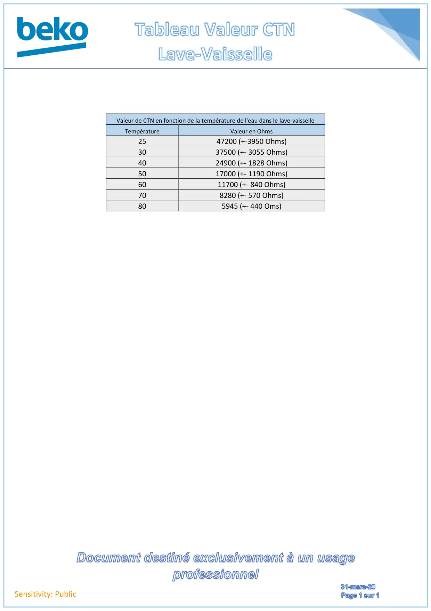

Tableau Valeur CTN lave vaisselle

Sensitivity: PublicValeur de CTN en fonction de la température de l'eau dans le lave-vaisselleTempératureValeur en Ohms2547200 (+-3950 Ohms)3037500 (+- 3055 Ohms)4024900 (+- 1828 Ohms)5017000 (+- 1190 Ohms)6011700 (+- 840 Ohms)708280 (+- 570 Ohms)805945 (+- 440 Oms)
1 / 1